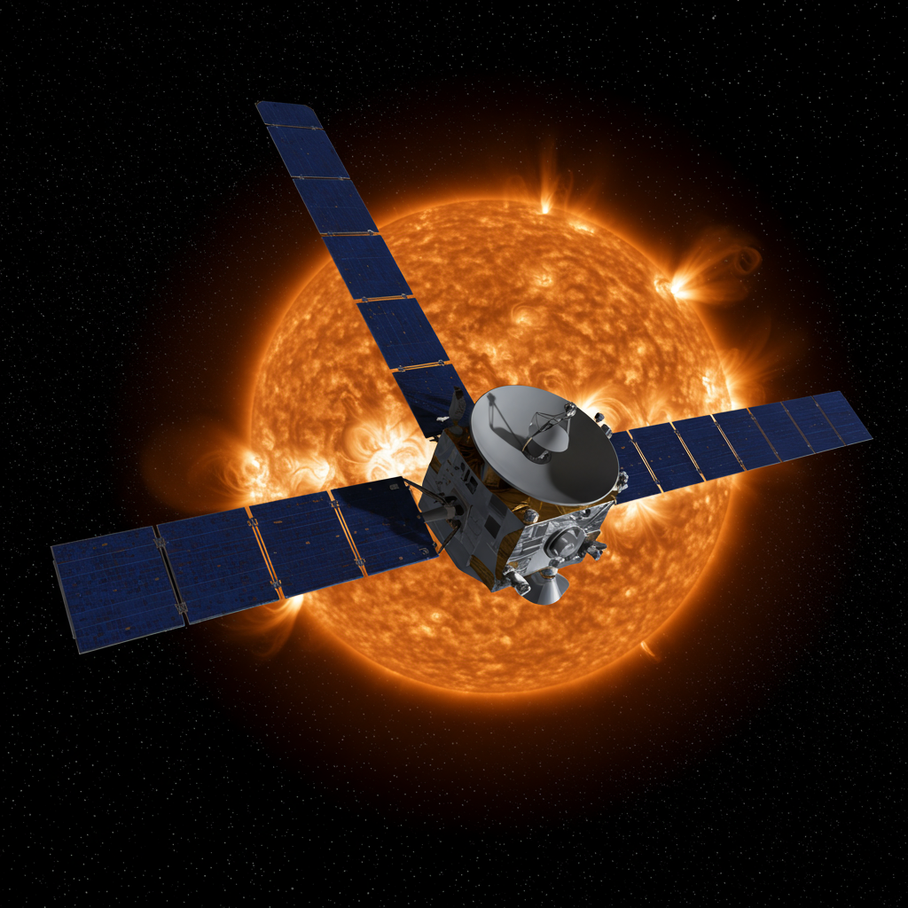

Helios 1 y Helios 2
Agencias: NASA / DLR (Alemania Occidental)
Fechas de lanzamiento: Helios 1: 10 de diciembre de 1974 / Helios 2: 15 de enero de 1976
Duración de misión: Helios 1: hasta 1986 / Helios 2: hasta 1980
Tipo de misión: Sondas solares – estudio del entorno cercano al Sol
Distancia al Sol: Helios 1: 0.31 UA / Helios 2: 0.29 UA (récord en su tiempo)
Velocidad máxima: Helios 2: ~274,000 km/h (récord de velocidad orbital hasta Parker Solar Probe)
Instrumentos: Magnetómetro, detectores de partículas solares, espectrómetros de plasma, detectores de polvo cósmico
Impacto histórico
Las sondas Helios fueron pioneras en la exploración del entorno solar más cercano. Desarrolladas conjuntamente entre NASA y la agencia espacial alemana DLR, proporcionaron datos críticos sobre el viento solar, las partículas de alta energía y los campos magnéticos interplanetarios. Helios 2 fue la primera en acercarse a menos de 0.3 UA del Sol y fue, durante décadas, la sonda más rápida jamás construida. Sus observaciones sentaron las bases para misiones más recientes como Parker Solar Probe.